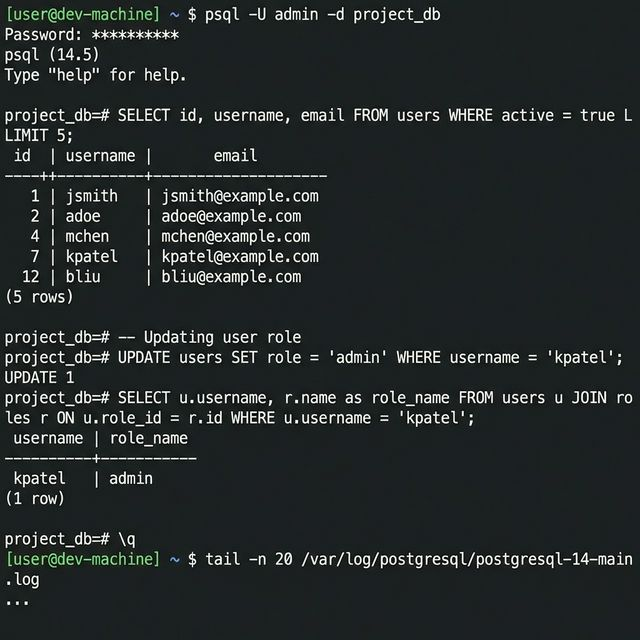
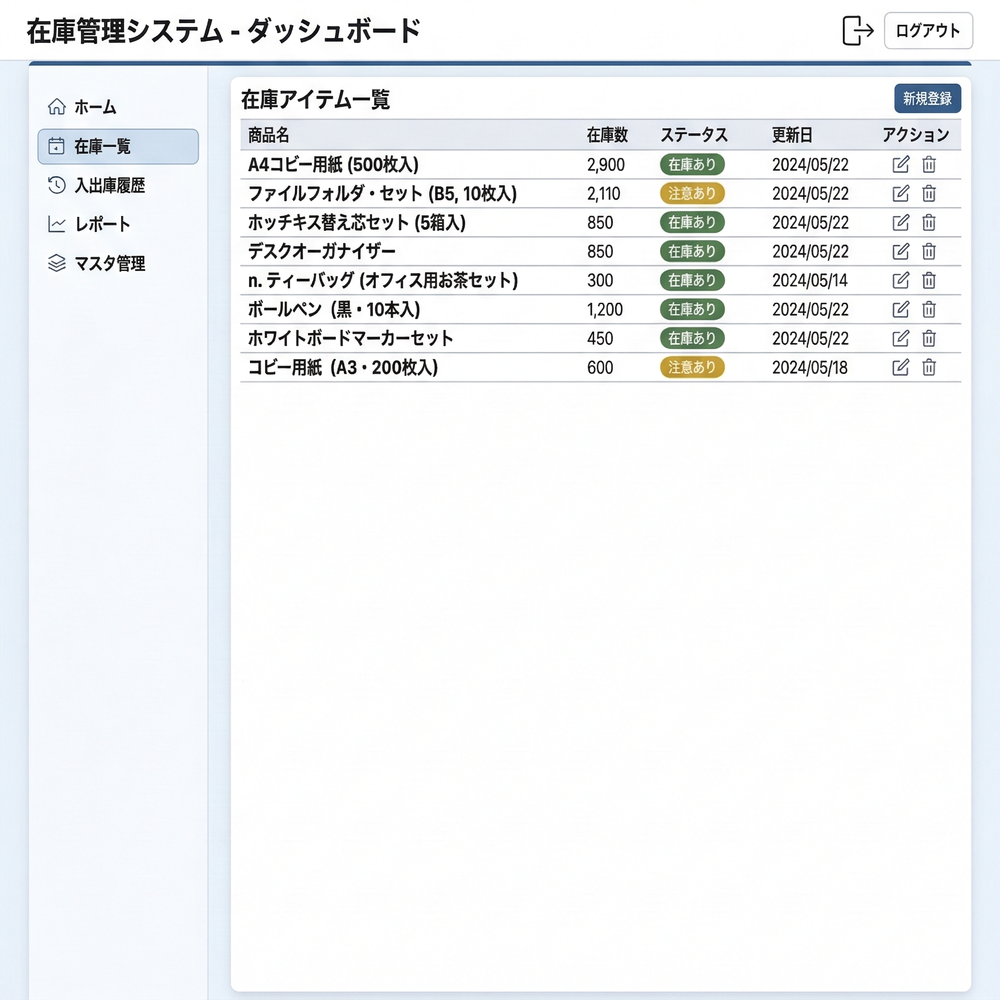

未経験からエンジニアへ
未経験から現場で使える
開発スキルを身につける
法人向け研修と同じカリキュラムで
実際の開発に近い形で学べるエンジニアスクール
本気でエンジニア
を目指すあなたへ
3か月間で集中して学びたい20〜35歳の方が対象です。
フルタイム形式を推奨していますが、働きながらの受講も可能です。
- 独学やスクールで学んだが、面接で手応えがない
- 「開発経験がない」と言われて転職がうまくいかない
- 本気でエンジニアに転職したい（20〜35歳）
- 3か月間、集中して学習に取り組む意欲がある
プログラミングスクール、動画教材…
それでも面接で落ちる理由
努力が足りないのではありません。
「面接で語れる開発経験」がないだけです。
よくあるパターン
- 動画講座を見て「わかった気」になる
- ポートフォリオはあるが実務とかけ離れている
- コーディングはできるが、実務的な開発工程の理解が浅い
- テスト・設計・環境構築など現場必須のスキルを経験していない
- 「何を作りましたか？」に具体的に答えられない
→ 面接で「開発経験は？」と聞かれて詰まる
この研修で変わること
- 見るだけでなく、書いて動かして身につける
- Javaを中心に実務想定の在庫管理システムを設計〜実装
- 開発環境の構築からサーバー操作まで実践
- 単体テスト・結合テストまで経験
- 企業の新人研修と同じ内容を修了
→ 面接でシステム開発について語れるようになる
数字で見る研修実績
修了生のデータが、この研修の価値を証明しています。
※ 数値は直近1年間の修了生データに基づく
研修の詳細を聞いてみませんか？
無料カウンセリングを予約カリキュラム3か月の実践ロードマップ
1日8時間 × 週5日のフルタイム形式を推奨。
3つのフェーズで段階的に
実務レベルへ引き上げます。
※進捗問わず3か月間で研修は終了となります。
基礎固め
Java・HTML/CSS/JSの基礎を徹底的に学習。
プログラミングの土台を固めます。
実践スキル習得

クイズシステムの開発、Linux操作、SQL/DB操作を実践。
現場で必須のスキルを身につけます。
在庫管理システム開発 + テスト

実務想定のWebシステムを設計から開発。
単体テスト・結合テストまで経験し、卒業テストに挑みます。
- データ設計・業務ロジック構築
- 画面実装・データ管理
- 単体テスト・結合テスト
- 卒業テスト（基準未達は修了不可）
ここまでやるからシステム開発の実務を理解できる。
なぜ7万円（税抜）なのか？
もともと法人向けに提供していた研修を、初めて一般向けに開放。
モニター価格として期間限定で7万円（税抜）で提供しています。
他のスクールとの違い
| 比較項目 | 一般的なスクール | 本研修 |
|---|---|---|
| 料金 | 30〜80万円 | 7万円（税抜） |
| 学習スタイル | 動画やプログラミングが中心 | 実務開発 + テスト |
| 期間 | 2〜6か月（パートタイム） | 3か月（フルタイム推奨） |
| カリキュラム | 教材用に作成 | 法人研修と同一 |
| 実務スキル | コーディングのみ | 開発環境構築〜テストまで実践 |
お支払いについて
分割払いについてはお問い合わせください
開始後の返金は原則不可。まず無料説明会でご確認ください
PC（メモリ8GB以上推奨）+ インターネット環境
1日8時間 × 週5日のフルタイム形式を推奨
※働きながらの受講も相談可能です
料金やスケジュールについて詳しく聞きたい方は
無料カウンセリングを予約修了生のリアルな声とその後
実際に修了した方の声をそのまま掲載しています
文系出身でプログラミングは完全未経験でした。
最初の1か月は正直ついていくのが大変でしたが、在庫管理システムを完成させたときの達成感は格別です。
配属先でもJavaの基礎がしっかり身についていると評価されました。
※法人研修受講者の声です
前職は営業でしたが、IT企業に転職後この研修を受けました。
独学では理解できなかった開発工程の全体像がつかめました。
特にテスト工程を実際に経験できたのが大きかったです。
今ではチーム内でコードレビューもできるようになりました。
※法人研修受講者の声です
32歳で未経験入社だったので不安でしたが、カリキュラムが体系的で段階的に学べました。
現場配属後、研修で学んだJava開発の知識がそのまま活きています。
実務を想定したシステム開発を経験できたので、バックエンド全般の基礎が身につきました。
※法人研修受講者の声です
大学ではプログラミングを少ししか経験していませんでしたが、この研修で実務レベルのJava開発を一通り経験できました。
在庫管理システムの開発経験は今のプロジェクトでも役立っています。
毎日手を動かす形式なので、自然とスキルが身につきます。
※法人研修受講者の声です
事務職からの転身で基礎知識ゼロからのスタートでしたが、3か月間集中して取り組めたのがとても良かったです。
ただ、3か月は本当にあっという間で、もう少し長くても良いと感じました。
研修で作った在庫管理システムが実務の理解に直結しています。
※法人研修受講者の声です
よくある質問
はい、未経験から始める方を対象にしたカリキュラムです。
Java基礎から丁寧に学び、段階的に実務レベルまで引き上げます。
受講者の約8割がプログラミング未経験からスタートしています。
本研修はスキル習得に特化したプログラムです。
就職斡旋は行っておりませんが、研修で得たスキルと開発実績は面接で大きなアドバンテージとなります。
実際に多くの修了生がエンジニアとしてのキャリアをスタートさせています。
はい、オンラインでの受講が可能です。
ご自宅からPCとインターネット環境があれば受講いただけます。
※ 講師への質問や集中力の面から、オフライン（対面）での受講を推奨しています。
フルタイム形式（1日8時間×週5日）を推奨していますが、働きながらの受講も可能です。
詳しくは無料説明会にてご案内しております。
講師への質問は随時可能です。
わからない部分はその場で解消できる環境を用意しています。
カリキュラムは「自分で考え、手を動かす」ことを大切にしています。
つまずいたときは講師がサポートしますので、安心して挑戦してください。
Windows 10以降またはmacOSのPCが必要です。
メモリは8GB以上を推奨しています。
安定したインターネット環境もご用意ください。
最大の違いは「法人向け研修と同じカリキュラム」を使用している点です。
動画学習やプログラミング学習が中心の一般的なスクールとは異なり、実務と同じ環境で在庫管理システムの設計・開発・テストまで行うため、現場で必須のスキルを実践的に習得できます。
修了証書の発行は行っておりませんが、研修で開発した在庫管理システムなどの成果物は
そのままポートフォリオとしてお使いいただけます。
3か月間の研修で身につけたスキルや開発経験自体が、転職活動での大きなアピール材料となります。
このまま「開発経験なし」で
面接を受け続けますか？
3か月で変わる道があります。
モニター期間は予告なく
終了する可能性があります
研修の成果物をポートフォリオとして活用
3か月の実務研修で開発したシステムを
転職活動のポートフォリオとしてそのまま使えます。
無料説明会でわかること
あなたの年齢は？
プログラミング経験は？
お申し込み情報を入力
30秒で完了します。24時間以内にご連絡いたします。
お申し込みありがとうございます！
- 確認メールをご確認ください
- 担当者から日程調整のご連絡をお送りします
- オンラインで無料説明会を実施（約30分）
※ 無料説明会は約30分。質問だけでもOK。無理な勧誘は一切ありません。